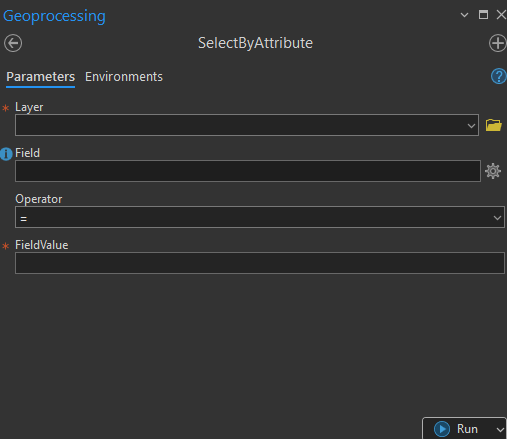
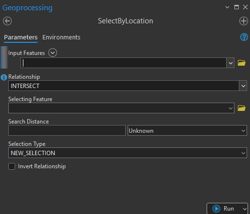

Select by Attributes
Built a script tool that lets users select features from a layer by specifying a field, operator, and value—without writing SQL manually. The tool uses parameter dependencies to show only valid fields and values based on the selected layer. It improves accessibility for non-GIS users and reduces errors in expression building.
</> Snippet
def ScriptTool(param0, param1, param2, param3):
ap = arcpy.mp.ArcGISProject("CURRENT")
m = ap.listMaps()[0]
my_list = []
for layer in m.listLayers():
if layer.isFeatureLayer and not layer.isBroken:
if layer.name == param0:
featureClass = layer.dataSource
fields = [param1]
with arcpy.da.SearchCursor(featureClass, fields) as cursor:
for row in cursor:
my_list.append(row[0])
if param3 in my_list:
val = '{}'.format(param3)
else:
val = None
exp = "{0} {1} '{2}'".format(param1, param2, val)
arcpy.AddMessage(exp)

Interface
Select by Location
Developed a spatial query tool that selects features based on their relationship to another layer (e.g., intersects, within, contains). Includes optional distance-based selections. The interface adapts to user input, and the tool executes using SelectLayerByLocation, offering a simpler way to perform spatial selections.
</> Snippet
def updateParameters(self):
# Modify parameter values and properties.
# This gets called each time a parameter is modified, before
# standard validation.
aprx = arcpy.mp.ArcGISProject("CURRENT")
v = aprx.activeView # Get active view
m = v.map # Get active map
layerFilter = self.params[0].filter
# Initialize lists
layerList = []
layerFilter.list = layerList
# Populate layers
for layer in m.listLayers():
if layer.isFeatureLayer and not layer.isBroken:
layerList.append(layer.name)
layerFilter.list = layerList

Interface